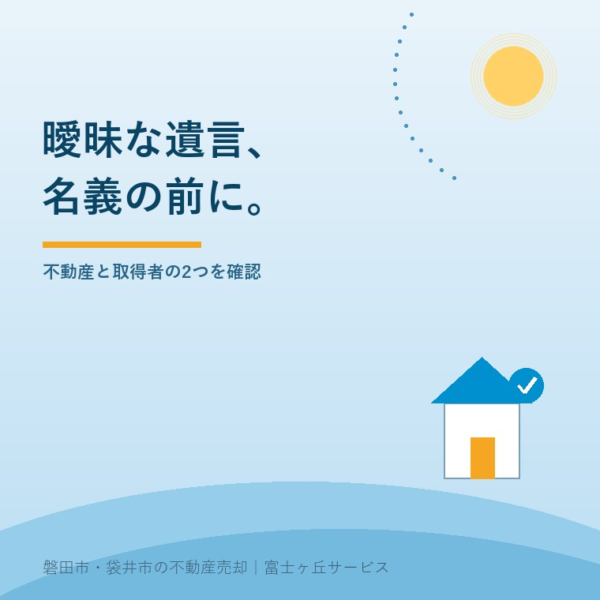
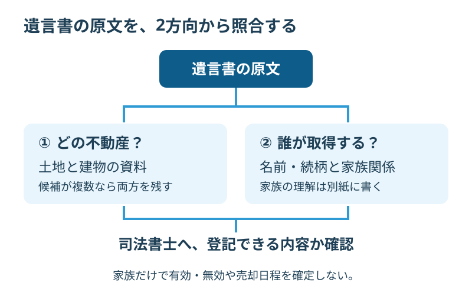

遺言書が曖昧な実家、登記前の2つの確認
2026年9月30日｜カテゴリ：相続・しまい方

この記事の要点
親の遺言書はあるけれど、この内容で実家の名義を変えられる？
曖昧な遺言書は、対象の土地・建物と取得者を特定できるかが相続登記前の確認点です。家族だけで解釈を確定せず、遺言書と物件資料を司法書士へ見せ、個別判断は専門家に確認を。磐田市・袋井市・森町では、介護施設の運営から不動産事業を始めた富士ヶ丘サービスのような地域密着の会社に、資料整理から相談する選択肢があります。
大石浩之（磐田市／不動産業）です。実家の売却を考え始めたとき、親の遺言書が見つかる。家族には大きな手掛かりですが、書いてある家と、売ろうとしている土地・建物が一致するかは別に確かめます。
本記事は2026年9月30日確認の日本司法書士会連合会の解説を入口に、売却相談へ持っていく資料の整え方を示します。遺言の効力を不動産会社が判定する記事ではありません。相続・登記の個別判断は専門家に確認を。
2026年4月の解説は、遺言書の読み方の入口
日本司法書士会連合会は、公式サイト「しほサーチ」で2026年4月24日、曖昧な遺言書と相続登記について解説しました。4月24日は解説の公開日であり、この日に新しい相続の法律が施行されたという意味ではありません。
解説が最初に挙げる確認は二つです。対象となる不動産を第三者にも特定できることと、取得する人が分かること。家族の間では通じる呼び方でも、手続きをする側が同じ土地・建物と同じ人を指していると確認できるかを見ます。
私は、遺言書を見つけた家族が最初にする作業を、二つに絞って示した点を評価します。法律用語をすべて覚える前でも、何が分からないかを言葉にできます。相談を受ける側にも、原文と資料のどこを照合すべきかが伝わります。
その上で、記事の二つの確認点だけで「うちの遺言は有効だ」と結論を出すのは避けたいところです。今回の解説は個別の遺言書を判定するものではありません。読み方の入口を、専門家による確認の代わりにしてはいけません。
遺言書が保管されていることと、その記載で登記を進められることも同じではありません。保管の手続きについては自筆証書遺言の法務局保管を参照し、見つけた経路と書面の内容を分けて相談します。

確認1・どの土地と建物なのか
遺言書に書かれた不動産を確認するときは、家族が思い浮かべる実家と、資料に載る土地・建物を照合します。日司連は、候補となる不動産が複数ある場合や、表現から判断できない場合には、手続きが止まることがあると説明しています。
例えば「家」という呼び方を、家族は敷地と建物の一式だと受け取るかもしれません。しかし、その読み方を家族だけで確定させず、土地と建物の資料を両方そろえて司法書士へ見せます。この例は説明用の想定で、実際の相談事例ではありません。
私なら、確認表を物件ごとに一行にします。原文の呼び方、その候補と考える土地・建物、判断に使った資料、まだ不明な点を横に並べる。候補が二つあれば両方を書き、片方を都合よく外しません。「ここだと思う」と「確認できた」を分けるためです。
| 整理する欄 | 家族が書く内容 |
|---|---|
| 遺言書の原文 | 省略や言い換えをせず該当箇所を示す |
| 候補の不動産 | 土地・建物を分け、手元の資料と対応させる |
| 不明な点 | 候補が複数、記載との違いなどを残す |
住所を聞いただけで物件を決めつけない姿勢は、売却調査にも共通します。登記事項証明書を取得する準備を参考に、何の資料が足りないかを聞きます。相談前に全書類を完璧に集める必要はありません。追加取得の対象を専門家に絞ってもらう方法もあります。
家族のメモは別紙に作り、遺言書の原文へ注釈を足して意味を変えないようにします。資料の表紙だけを送るより、どのページが疑問なのかを添える方が質問は具体的になります。原本の扱いや提示方法は、相談する司法書士の案内に従ってください。
確認2・誰が取得するのか
遺言書で取得者を確認するときは、名前や続柄の表現が誰を指すのかを整理します。家族が「当然この人だ」と思っても、遺言書全体と家族関係を見なければ判断できない場合があります。日司連の解説も、取得者が分かることを確認点に挙げています。
私の提案は、家族関係のメモと、遺言書の記載を分けて渡すことです。記憶で補った説明には「家族の理解」と書く。書面で確認した内容と口頭で聞いた話が混ざると、専門家が原文をどう読んだか分からなくなります。
親が生前に話した希望は、ご家族には重みがあります。ただ、その希望を今ある遺言書の文言と同じものとして扱えるかは別の判断です。「親はこう言っていたから」と、ほかの家族に署名を急がせる進め方を私は勧めません。相続の個別判断は専門家に確認を。
遺言執行者という、遺言内容を実現する役割の人が書かれている場合も、その人が今回どこまで手続きできるかを確認します。遺言執行者と実家売却の確認も参考に、取得者、連絡担当、売却の手続きをする人を混同しないよう整理します。
不動産会社へは、代表して電話した家族がそのまま売主になるとは限らないことを伝えてください。見積りを受け取る人と、契約を結ぶ権限のある人が違う場合があります。誰の名前で何を進めるかが曖昧なまま、販売の予定だけが進むのを防ぎます。
解釈が分かれたら、売却日程を先に固めない
曖昧な遺言書で登記を進めにくい場合について、日司連は相続人全員による遺産分割協議を検討する方法を示しています。遺産分割協議は遺産の分け方を話し合う手続きです。どの方法が今回使えるかは、遺言と関係者の状況を専門家に見てもらいます。
家族の話し合いがまとまらない場合には、家庭裁判所などの手続きが必要となる場合があります。日司連は、その際の時間と費用の負担にも触れています。記事だけを根拠に、必要な当事者や手続期間をこちらで決め打ちすることはできません。
私はこう考えます。遺言書が見つかったことと、売却の日程を約束できることは別だ。買主への引渡しを先に約束してから名義の話を戻すより、何が未確定かを仲介会社に明かして、準備の範囲を決めた方が家族を守れます。
私にも迷うところはあります。家の維持費を抑えるため、早く準備したい気持ちはよく分かる。一方で、名義が見えないまま片付けや工事に費用を掛けてよいかは、物件を見ただけでは答えられません。費用を出す人と承認する人を確認し、戻せない作業を急がない案内を選びます。
その間も、家の状態の記録、手元書類の整理、相談先への質問づくりはできます。売却する場合の価格の検討と、売主として契約できるかの確認を別の工程にすれば、準備を全部止めずに済みます。売却価格の相談は、権利関係の結論を出す手続きではありません。
磐田・袋井の実家で今日そろえる相談メモ
磐田市・袋井市の実家を遠方から整理する家族には、帰省してから書類を探し始める前に、司法書士へ持参資料を問い合わせる方法を提案します。遺言書がどこにあり、どの表現で止まっているかを伝えるだけでも、相談の入口になります。
私なら、相談メモの先頭に「売却は検討中。対象物件と取得者が未確認」と書きます。次に、遺言書の所在、候補物件、連絡できる家族、売却を考える理由を記します。介護費用のためなど期限への希望があれば、法的に決まった期限とは区別して伝えます。
相談の終わりには、追加する資料、家族で確認する事項、次に連絡する人を一つずつ聞きます。「登記できそうです」という感触だけでは、仲介会社へどこまで説明してよいか分かりません。どの事項が確認済みで、何が残ったかを持ち帰ることが今日の成果です。
- 遺言書と家族の解釈を別紙に分ける。
- 土地・建物と取得者の不明点を一つずつ書く。
- 名義の見通しを確認してから売却日程を組む。
私は、今日売ると決めるようには案内しません。使える手続きと足りない資料が一つ分かれば前進です。税務・登記・相続の個別判断は、税理士・司法書士・弁護士などの専門家に確認を。
よくある質問
実家と家族の判断に関する疑問を整理します。
- 住所が書かれていない遺言書は無効ですか？
- 住所などの一つの記載がないことだけで、遺言書の有効・無効を判断することはできません。日司連の解説は、対象の土地・建物を第三者にも特定できるかの確認を求めています。候補物件の資料と遺言書全体を司法書士に見せ、登記できる内容かを相談してください。遺言の効力や相続の個別判断は専門家に確認を。
- 相続人全員が納得すれば、そのまま売れますか？
- 家族の納得と、登記・売買の手続きが整うことは分けて考えます。遺産分割協議を検討する場合も、必要な当事者や書面、遺言との関係を先に確認します。誰が売主となり、どの順で登記を進めるかが分かるまで、引渡日を確定しない準備を勧めます。今回の遺言に対して使える方法と登記の個別判断は専門家に確認を。
- 名義が決まるまでは、売却相談もできませんか？
- 物件資料の整理や家の状態の確認、売却した場合の段取りの相談は、名義の問題を伝えたうえで進められます。ただし、査定の相談をしたことが売却権限の確認に代わるわけではありません。仲介会社には取得者を専門家に確認中と明示し、契約や引渡しの約束と準備を分けてください。相続・登記の個別判断は専門家に確認を。

この記事を書いた人：大石浩之（磐田市／不動産業・宅地建物取引士）
富士ヶ丘サービス株式会社。介護施設の運営から不動産事業を始め、磐田市・袋井市・森町で、介護と相続、実家の売却を一体で相談できる窓口を設けています。家族が困らない売却のため、資料と現地の条件を一件ずつ整理します。著者プロフィール
本記事は2026年9月30日時点の公開情報と筆者の意見です。制度・数値・手続き・契約条件は変更されることがあります。税務・登記・相続・契約などの個別判断は、税理士・司法書士・弁護士などの専門家に確認を。